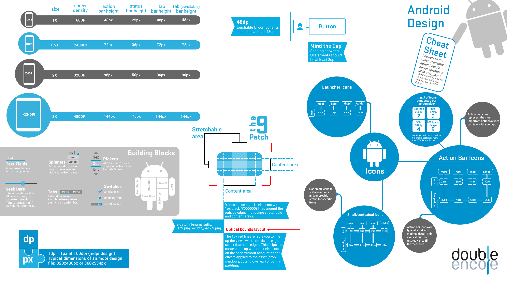
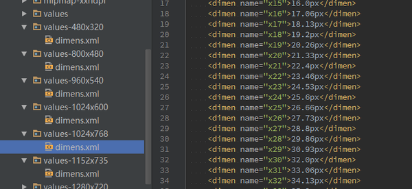

Android技术分享 04/23/2016
by LinXiao
大家都知道,Android手机又n种型号,也有n种屏幕,不算平板,绝大部分Android手机屏幕是16:9的分辨率. 早期的屏幕分辨率有240*160,320*240...这些手机基本已经被淘汰了,仍然在使用这些手机的用户,基本上都是智能机当功能机使用的用户, 一般不建议兼容这些机型,无论是屏幕还是代码,会产生相当高的额外成本.目前我们所需考虑的最低屏幕应该就是4寸WVGA(480*800).
现在Android手机主流的尺寸从4寸~7寸不等,大多数手机的尺寸集中在5寸左右,Android不仅屏幕尺寸多样, 就算是同一尺寸下的屏幕也会有不同的分辨率,比如同是5寸屏,可能有的机型为1080p,有的机型为2K,这就造成了一个问题,即由于屏幕密度 的不同,像素这个单位不能再确定设计实际的物理尺寸了.
举例来说,现有同是5寸的两台手机,一台分辨率为1080p(1080*1920),一台为2k(1536*2560),显然后者的 屏幕密度是要高于前者的,如果这时有个按钮声明宽度为200像素,那么在1080p的屏幕上,这个按钮的宽度大概是屏幕宽度的18%, 然而在2k的屏幕上这个按钮的宽度则会降到屏幕宽度的13%,而在480*800的手机上这个按钮的宽度又会占屏幕宽度的41%,这样的变化显然是 无法容忍的,所以在Android上,有dp这么一个单位,也就是密度无关像素.使用dp的目的,就是为了让这个单位与实际尺寸关联起来, 在不同密度和不同尺寸的屏幕上,固定大小的dp与物理尺寸尽量保持一致.
dp具体的计算公式是这样的
dp = px / (ppi / 160)
ppi = √(screenWidth^2 + screenHeight^2) / screenInches
通过这种方式,可以计算在在一个确定了尺寸和分辨率的屏幕上,像素标注对应的dp长度.
所谓等比缩放,即根据不同的分辨率设置配置文件,对不同大小的屏幕按分辨率保持比例一致.
刚刚说到了使用dp保证控件实际尺寸,这就带来了一个新的问题: 既然物理尺寸一致,那么小屏手机上看到的内容 肯定要比大屏手机上少了,这时候就要做出选择,是保证应用在不同手机上都按照设计图的比例一致呢,还是保证用户实际的可点击区域呢. 答案当然是选择前者,因为要保证用户可点击区域的大小来来降低用户阅读和操作的难度,无论手机屏幕大小怎样,人的手指就那么大,如果一个 在5寸屏幕上刚刚好的按钮,等比缩放到4寸屏上,可能用户想要准确点中它就非常吃力.同样,字体如果等比缩放,小屏手机用户阅读会很吃力.
我们需要认识到一点:用户买大屏手机,是为了看到更多的内容,而不是为了看到放大的内容; 同样用户买小屏手机,只是为了更方便单手操作而不是为了看缩小的内容.大屏手机就应该比小屏手机显示更多的内容,小屏手机显示的比大屏 紧凑也是理所应当的.
在Android开发中很多控件都是使用match_parent和 warap_content
属性来布局的,这意味着很多控件的宽高都是由屏幕宽高和内容大小来决定的.盲目使用等比缩放的话,必然会导致控件在部分屏幕上变形,完全
按照比例来做的话,工作量将会非常大,南辕北辙.
当然,等比缩放是很有用的,比如在某些控件间间距的控制,通过等比缩放来保证间距合理不会在大屏上台窄, 或小屏上太宽.
通过上面的讲解,我们可以发现其实Android屏幕适配并没有那么复杂,只需要按照Google给出的方案,根据实际 情况,稍作调整即可.对于小屏手机来说,我们需要注意当屏幕变小后,某些显示效果会不会受到影响,比如EditText显示的字太少,TextView 因为空间不够而产生换行,这些需要我们根据实际情况来调整.
某些单列式布局,比如登录,注册,设置之类的界面当我们保证物理尺寸的大小后,有可能会出现界面显示不完全, 弹出软键盘后把界面挤压到用户操作不了某些区域,对于这样的问题我们可以在外层加入ScrollView,或者对垂直间距进行等比缩放.
Android根据屏幕分辨率,从低到高设定了 ldpi, mdpi, hdpi, xhdpi, xxhdpi, xxxhdpi等几个适配 文件夹,用于存放适配的资源文件和图片素材等,目前ldpi,mdpi已经基本淘汰,hdpi也很少见了,在使用图片素材时,建议只使用一套xhdpi 或xxhdpi的图即可. 具体可参照:

Android Design Guide
最后说一下前段时间在知乎上看到的问题 你见过那些令你瞠目结舌的Android代码技巧 就采用了在几个适配文件夹下分别建立了与px对应的dp单位表,对所有控件进行等比缩放.

这种做法是不可取的,明明有通用的适配方法不用,强行按照具体分辨率去做适配,明显是自寻死路, 请不要学习这种"奇技淫巧".
最后祝你, 身 体 健 康, 再见 : )